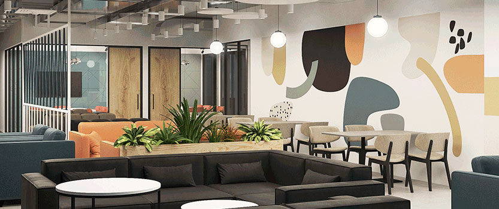
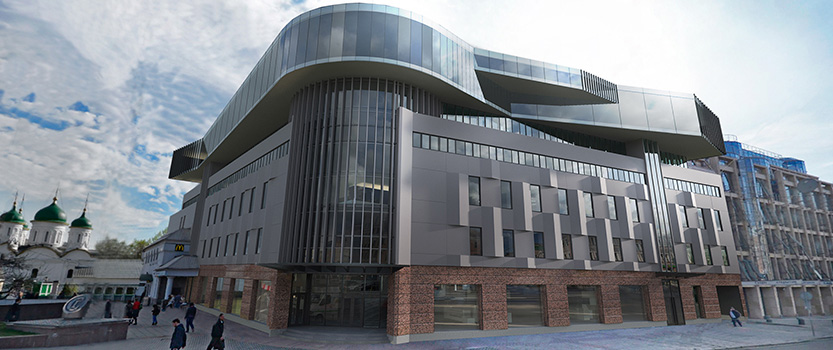
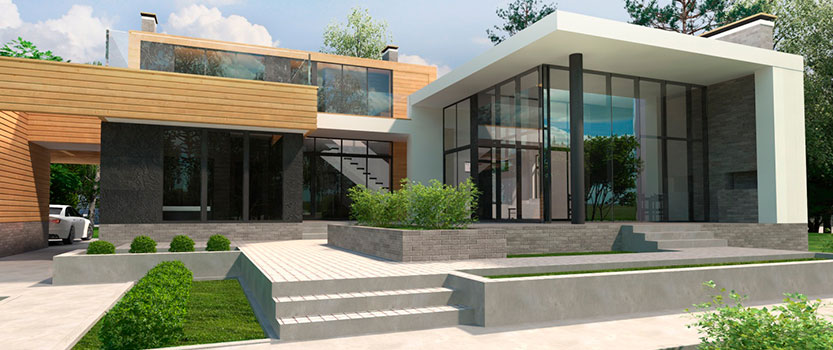
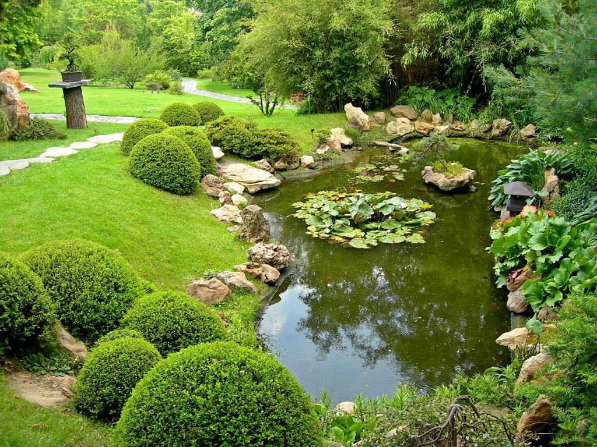

При проектировании офисных пространств очень важно понять, с одной стороны, как работают организации, понять, как здания могут способствовать организациям в их трудовой деятельности, и выявить «соответствие» этих двух миров во времени.

Проектирование зданий
Мы умеем разрабатывать качественные проекты больших объектов. В портфолио имеются проекты общественных и жилых зданий разной этажности, генпланов жилой многоэтажной и малоэтажной застройки, проекты торговых центров, гостиниц и промышленных зданий.

Проектирование частных домов и дизайн интерьеров
Более одиннадцати лет мы успешно занимаемся проектированием частных загородных домов и коттеджей из дерева, кирпича, монолитного железобетона и пеноблока. Также мы создаем архитектурные проекты коттеджей, частных домов, бань, гостевых домов, гаражей, беседок и любых других малых архитектурных форм, вплоть до скамеек и навесных мостов.

Ландшафтный дизайн
Закажите индивидуальный проект ландшафтного дизайна в нашей компании и наслаждайтесь прекрасным результатом!

Что еще мы делаем?
Мы разработаем проект, используя ваш брендбук, как при создании более 200 проектов офисов для Сбербанка. Или мы можем создать ваш собственный брендбук и, используя его, спроектировать вам комфортный офис.
Проектирование промышленных зданий и сооружений, которые предназначены для размещения в них производств с обеспечением требуемых условий, для производственного процесса, а также среды для нормальной трудовой деятельности человека. Наша компания рада предложить строительным и девелоперским компаниям услуги по индивидуальному проектированию промышленных объектов.
MS Architects - эксперт в области деревянного домостроения. Мы предлагаем индивидуальные проекты - семейный дома из бревен ручной рубки, проектирование коммерческой недвижимости из дерева и проекты небольших деревянных домов.
Проектирование коттеджей – одно из приоритетных направлений нашей компании. Мы внимательно изучаем все особенности участка, выделенного под строительство, качество грунта, инсоляцию, инфраструктуру, ландшафтный рельеф и, исходя из всех данных, разрабатываем оптимальный проект. Наша цель – воспроизведение городского комфорта на природе. Все нюансы будут учтены и тщательно проработаны. И естественно мы не забудем о визуальной привлекательности!
Архитектурное бюро MS Architects предлагает пакет услуг для девелоперских компаний:
Проектирование в соответствии с 87 постановлением. Разработка архитектурных концепций и объемно-планировочных решений. Проектирование многоквартирных домов, таунхаусов и общественных зданий. Проектирование коттеджных поселков и жилых комплексов. Проектирование офисов продаж, входных групп и малых архитектурных форм
Дизайн интерьеров. Дизайн и проектирование визуально привлекательных входных групп. Дизайн интерьеров офисов и общественных пространств. Дизайн типовых интерьеров квартир на продажу – Эконом/Комфорт/Бизнес-класса
3D-визуализация и моделирование Создание архитектурных моделей и презентационных материалов. Детализация, правильно подобранное освещение и продающий ракурс
Проектирование объектов инфраструктуры города. Наши опыт работы позволяет создать эффективные планировочные решения. Максимальная продажная площадь и удобная современная компоновка.